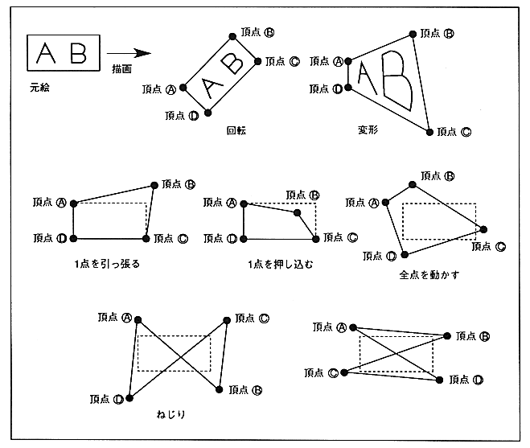

Draw a character pattern by specifying four vertex coordinates. Specify the four coordinates of the four vertices of the character pattern. The relationship between the four coordinates is arbitrary, so it can be flipped, scaled, rotated, or twisted according to the specified method.
Deformation sprites draw character patterns as diagonal lines. At this time, fill in the holes so that there are no missing pixels. As a result, pixels written twice are generated, so the results of color translucent processing, etc. are not guaranteed.
Since drawing is done with lines, in the case of twisting and rotation, it may protrude outside the figure connecting the four vertices.
Figure 1.5 Deformed sprite
